ATAP Configuration
Install STAP
-
Install kernel-devel for currently used kernel.
dnf install -y kernel-devel-$(uname -r) -
Install the latest GIM client on raptor
1 2 3
cd /opt/guardium_tz_bootcamp_automation/upload/source_files/agents/shell/ ./guard-bundle-GIM-12.2.2.0_r123489_v12_x_1-rhel-9-linux-x86_64.gim.sh -- --dir /opt/guardium --tapip <raptor_ip> --sqlguardip <cm_ip> -
In cm UI deploy STAP 12.2.1.1_r123268_5. Rember to ucheck option to see all available releases and confirm successful deployment.
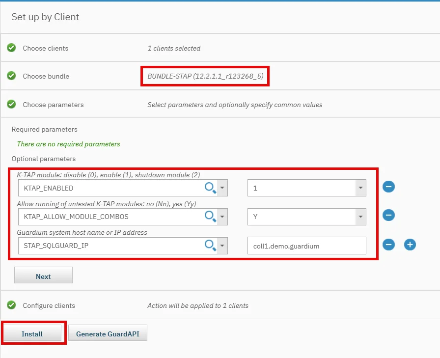
-
Then check in S-TAP Control view in coll1 UI that Postgres inspection engine (database instance) has been discovered by agent. Use
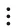
icon in row where raptor STAP appears and select Edit option. In the pop-up point Inspection engines and locate pgsql instance on the list.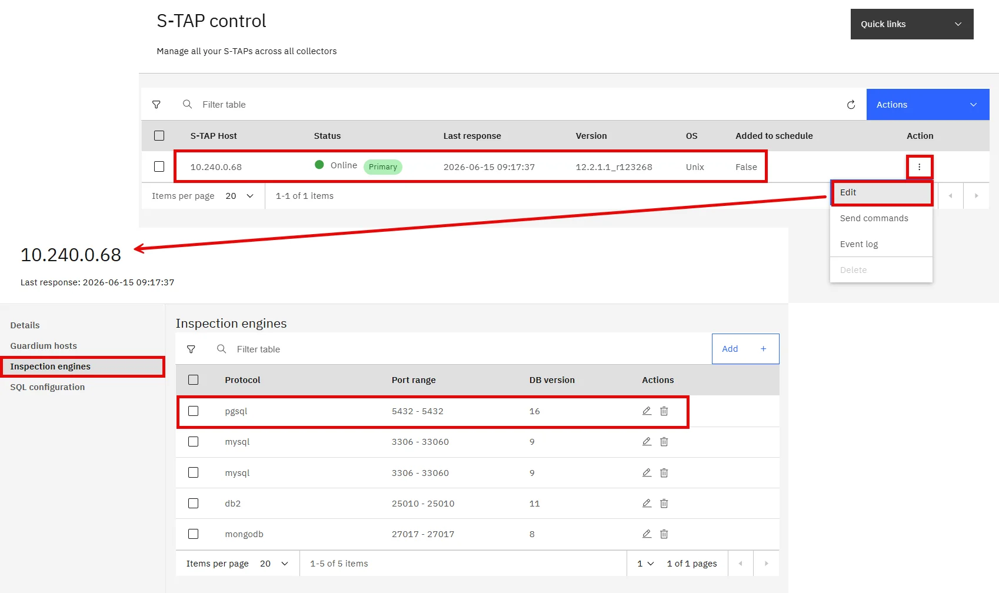
{kind=link}
{kind=link}
Check encrypted traffic visibility
-
From root session on raptor connect to Postgres instance as a tom user using non-encrypted connection and then check connection type and execute simple dummy SQL (use default environment password).
Notice that column ssl in output from first query has value f (false) what means that connection is not encrypted1 2 3 4 5 6 7
psql "postgresql://raptor.demo.guardium:5432/postgres?sslmode=disable" -U tom -W SELECT * FROM pg_stat_ssl WHERE pid=(SELECT pid FROM pg_stat_activity WHERE query LIKE 'SELECT%'); SELECT 'TOM’s SESSION WITHOUT SSL'; \q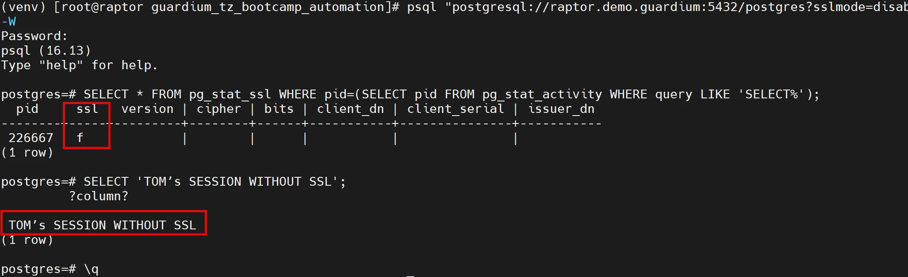
-
Open Full SQL (Training) report in Training dashboard on coll1.
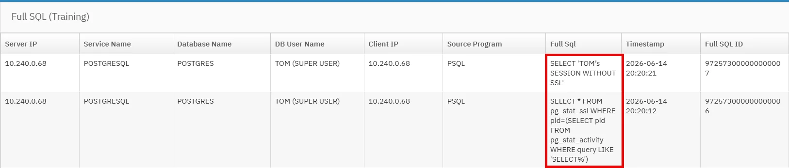
-
Connect to Postgres instance as a jerry using encrypted connection.
psql "postgresql://raptor.demo.guardium:5432/postgres?sslmode=require" -U jerry -W -
Check connection parameters and execute dummy SQL.
1 2 3 4 5
SELECT * FROM pg_stat_ssl WHERE pid=(SELECT pid FROM pg_stat_activity WHERE query LIKE 'SELECT%'); SELECT 'JERRY’s SESSION USING SSL'; \q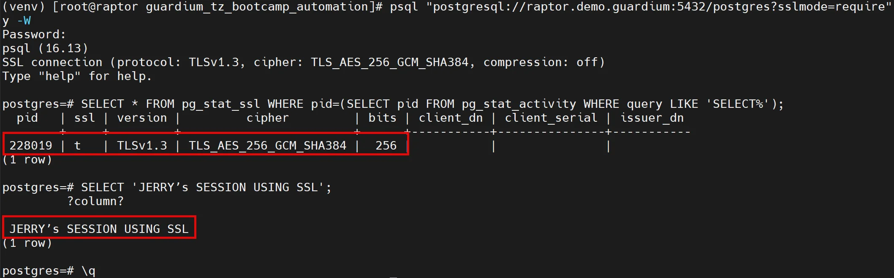
-
Check Full SQL (Training) report again and notice that traffic related for encrypted session did not appear there. In case of encrypted connections the traffic visibility requires ATAP configuration (if available).
{kind=link}
{kind=link}
{kind=link}
ATAP setup
-
As a root user on raptor execute these commands to configure ATAP for Postgres instance (
guardctlcommand requires full path specification during execution).1 2 3
/opt/guardium/modules/ATAP/current/files/bin/guardctl --db-user=postgres --db-home=/usr --db-user-dir=/var/lib/pgsql --db-type=postgres --db-instance=postgres --db-version=16 store-conf /opt/guardium/modules/ATAP/current/files/bin/guardctl authorize-user postgres -
Stop Postgres database engine.
systemctl stop postgresql -
Activate ATAP.
/opt/guardium/modules/ATAP/current/files/bin/guardctl --db-instance=postgres activate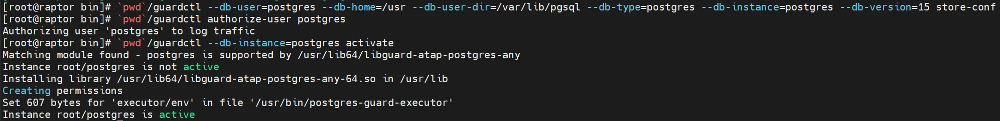
-
Start Postgres.
systemctl start postgresql -
Connect to database with SSL using a jerry account again.
psql "postgresql://raptor.demo.guardium:5432/postgres?sslmode=require" -U jerry -W -
Execute again SQL’s inside encrypted session.
1 2 3 4 5
SELECT * FROM pg_stat_ssl WHERE pid=(SELECT pid FROM pg_stat_activity WHERE query LIKE 'SELECT%'); SELECT 'A NEW JERRY’s SESSION USING SSL'; \q -
Check activity in Full SQL (Training) report and confirm that this time jerry’s session is correctly monitored.
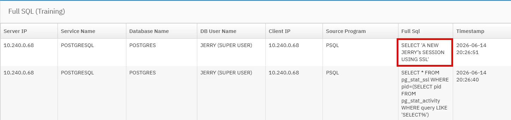
{kind=link}
{kind=link}
ATAP upgrade
-
In cm UI open Setup by Client view and configure STAP upgrade from 12.2.1.1 to 12.2.2.0.
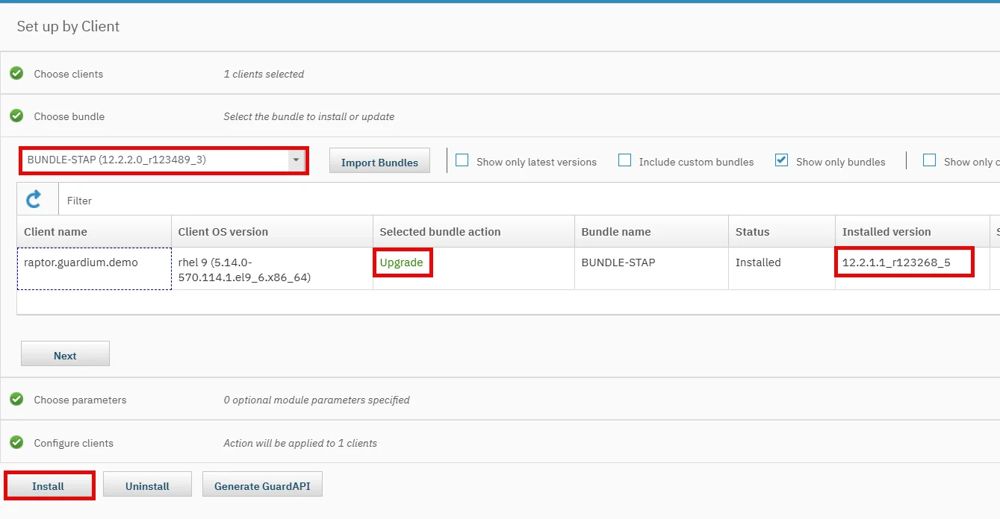
-
Monitor upgrade process and it should finish with success. This behaviour is expected from release 12.2 and up. Before 12.2 the agent upgrade required the ATAP deactivation. Now process of ATAP upgrade works in live.
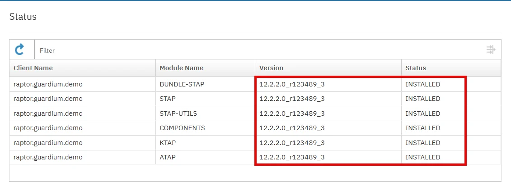
-
Login to Postgres as a tom using SSL channel on raptor.
psql "postgresql://raptor.demo.guardium:5432/postgres?sslmode=require" -U tom -W -
Execute some SQL’s.
1 2 3 4 5
SELECT * FROM pg_stat_ssl WHERE pid=(SELECT pid FROM pg_stat_activity WHERE query LIKE 'SELECT%'); SELECT 'TOM’s SESSION USING SSL AFTER STAP UPGRADE'; \q -
Check Full SQL (Training) report on coll1 and confirm that just executed activity is correctly audited.
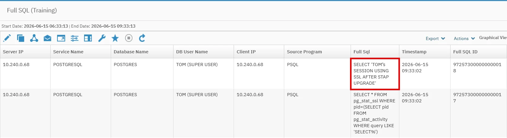
{kind=link}
{kind=link}
{kind=link}
STAP settings
-
Check on raptor connection to coll1.
netstat -an | grep <coll1_ip>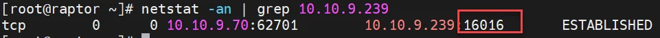
Only one connection on port 16016 is established between STAP and coll1. This port is used for clear text comunication (NO TLS communication) -
Check SSL settings on port 16016 to confirm that there is no SSL handshake possible on this port
openssl s_client -connect <coll1_ip>:16016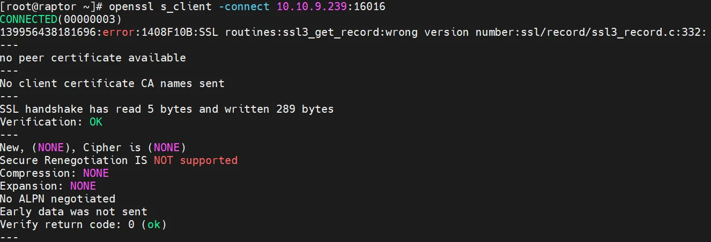
-
Using Set up by Client view on cm modify STAP module parameters.
Set parameters:
- STAP_USE_TLS: 1
- STAP_STATISTICS: -3
- STAP_CONNECTION_POOL_SIZE: 2
Select currently installed version of STAP (12.2.2.0). Confirm that changes are applied.
-
Then check again connections list to coll1 from raptor.
netstat -an | grep <coll1_ip>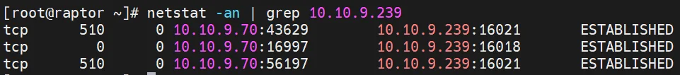
You should now see three connections. Notice that the connection on port 16016 is no longer available, as communication has switched to the encrypted channel between the agent and the coll1 (16018). The two additional connections on port 16021 are also in use, corresponding to the two extra threads we configured. -
Test encryption status on these two ports (16018 and 16021)
1 2 3
openssl s_client -connect <collector_ip>:16018 < /dev/null openssl s_client -connect <collector_ip>:16021 < /dev/null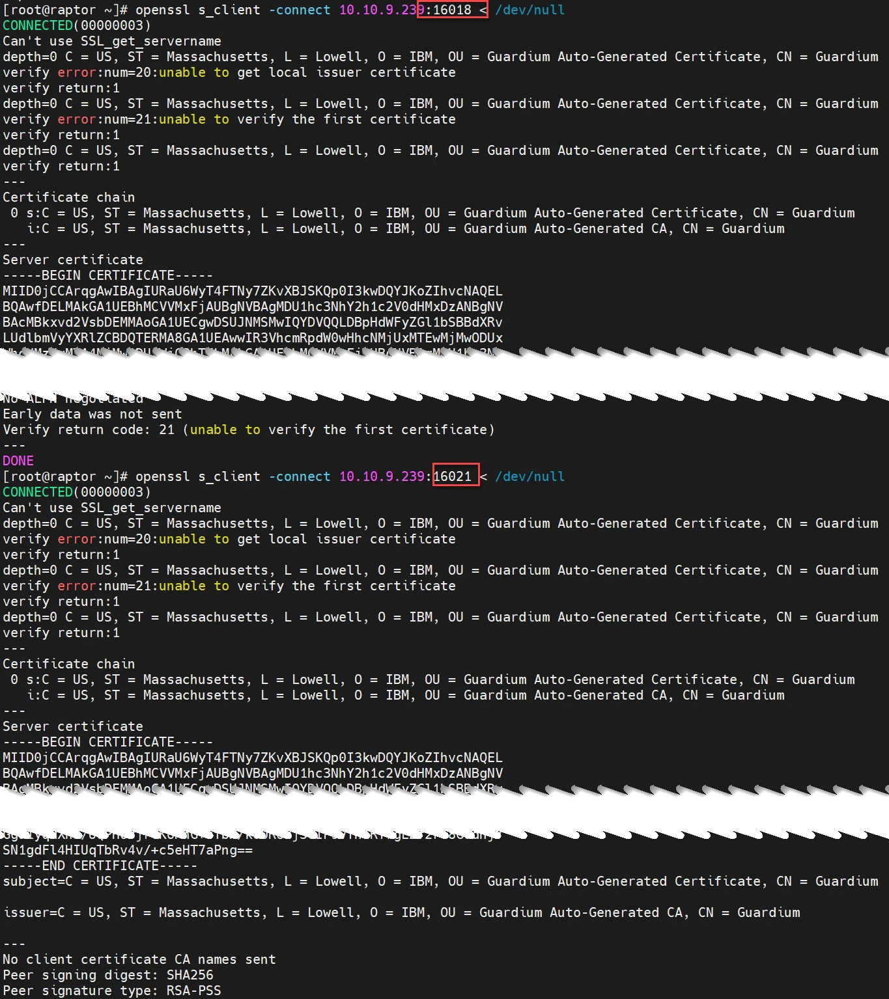
STAP_STATISTIC parameter set to value -3 we will check later on. On heavily loaded systems you can consider use additional port to manage more connection between STAP and collector. In this case you must change value of STAP_CONNECTION_POOL_SIZE parameter from 0 to positive value. -
To stop STAP from GIM server set parameter STAP_ENABLED to 0. Notice that value 2 will force STAP restart.
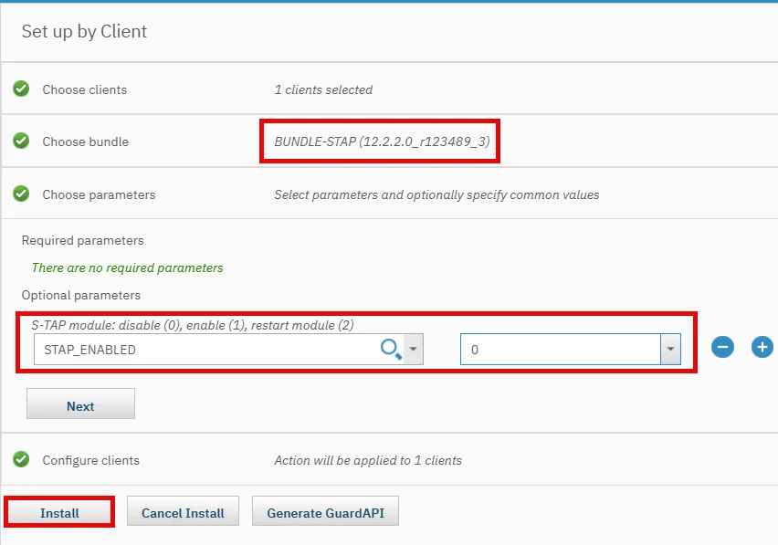
-
Then check STAP status in S-TAP Control in the coll1 UI and confirm that STAP is stopped.
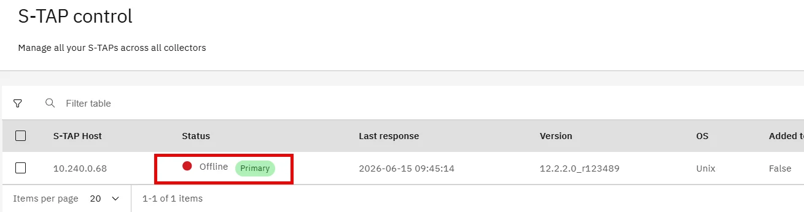
-
Start STAP from command line on raptor.
/opt/guardium/modules/STAP/current/guard-config-update --enable stap -
Then when STAP will be again operating, edit a raptor STAP configuration in S-TAP Control view on coll1 – press icon to select Edit option. It opens STAP configuration pop-up. Select Inspection engines from left menu and select all of them then delete all using Delete Inspection Engine in the options bar. It opens a warning window to Confirm desired changes.
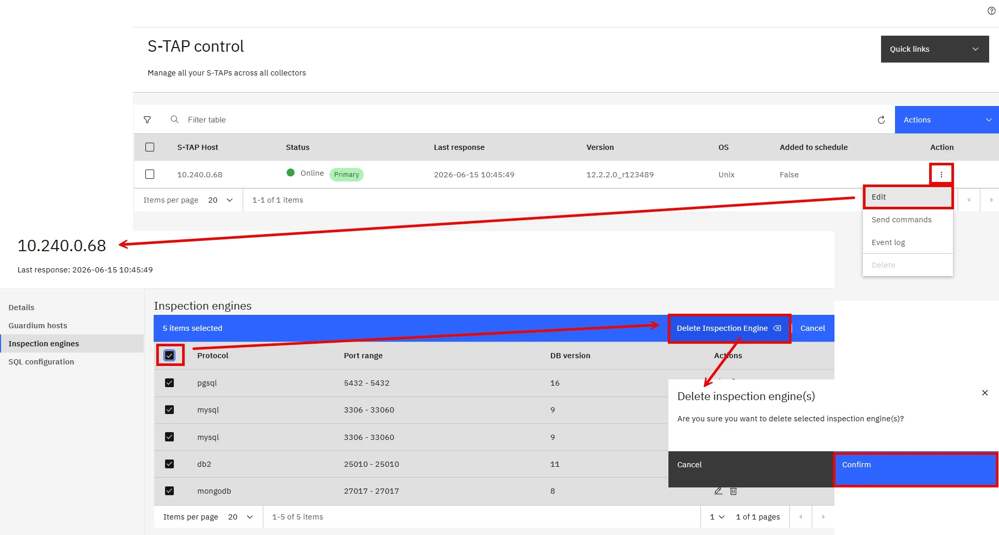
-
Now list of the Inspection engines should be empty. Save the changes.
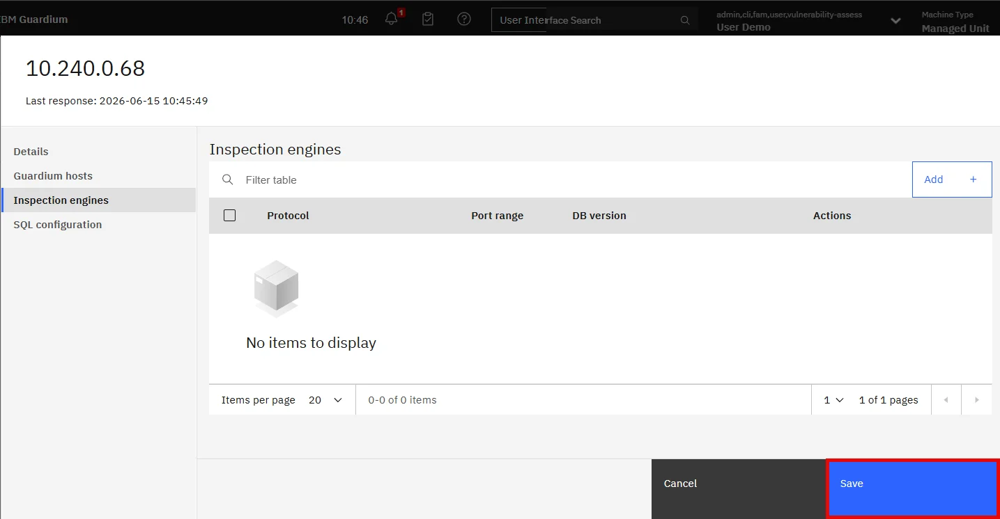
-
The STAP will be in Not synchronized state (yellow) because requested change is not yet consumed by STAP.
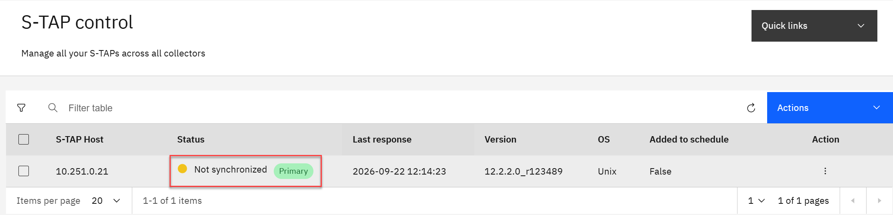
-
If you refresh the status after a while the status should change to Configuration error state (pink) because lack of inspection engine definitions. To rediscover them open again menu using icon and select Send commands option. It opens pop-up where one of the commands is Run database instance discovery. Select it and check the Replace Inspection Engines option. Then Apply changes.
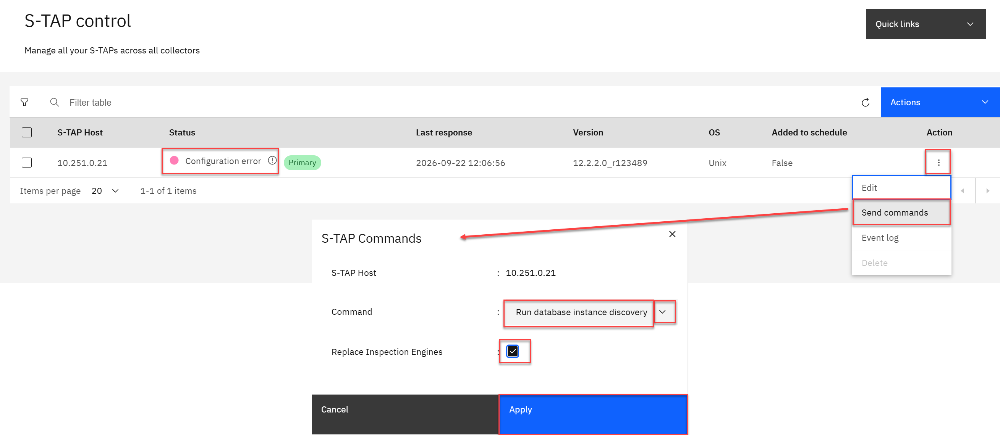
-
You back to S-TAP Control view and after a while (use refresh icon) the STAP status should change to Online because all IE’s has been rediscovered.
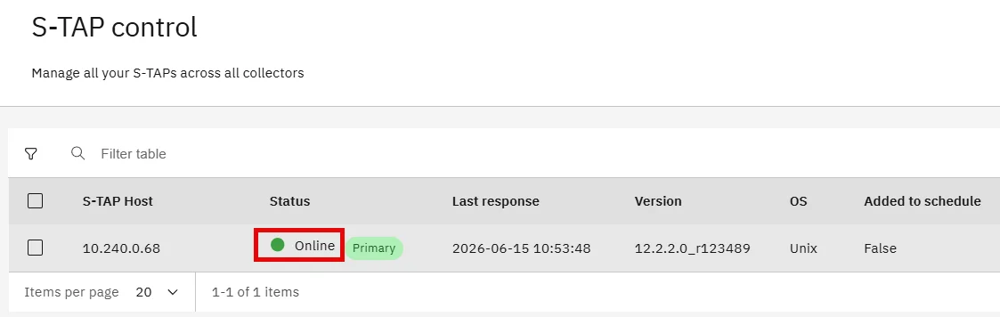
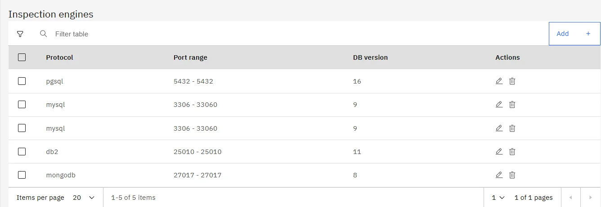
-
We can do this same from command line on monitored machine what provides us also better understanding what is or is not discovered correctly. To re-discover inspection instances execute on raptor machine.
/opt/guardium/modules/STAP/current/guard_discovery /opt/guardium/modules/STAP/current/guard_tap.ini --print_output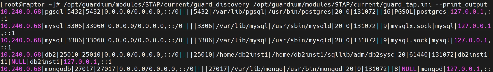
-
Previous command produces list of identified DB instances on raptor and can modify the STAP configuration stored in
guard_tap.inifile. Review the content of this file to identify DB_[X] sections. Each of them describes database instance which is monitored by STAP agent on raptor machine.cat /opt/guardium/modules/STAP/current/guard_tap.ini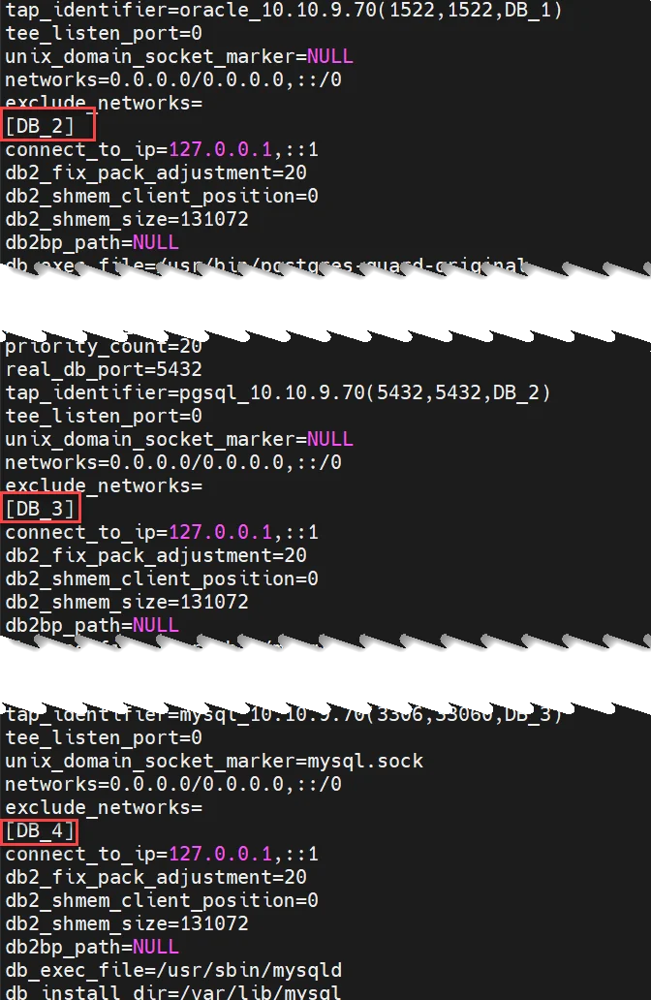
{kind=link}
{kind=link}
{kind=link}
{kind=link}
{kind=link}
{kind=link}
{kind=link}
{kind=link}
{kind=link}
{kind=link}
{kind=link}
{kind=link}
{kind=link}
{kind=link}
{kind=link}
More STAP features
-
Review the content of S-TAP and External S-TAP Statistics report in Dashboard on coll1, check columns S-TAP Total Packets Dropped, S-TAP Total Bytes Dropped, Stap CPU percent, Buffer recycled (if for some reasons the report will be empty try again change STAP_STATISTICS flag form -3 to -5 for example, continue the lab and check result in the meantime).
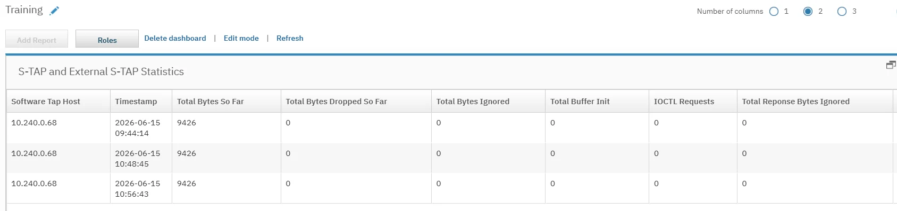
-
Spend a while on statistics documentation to understand what mentioned in report above https://www.ibm.com/docs/en/guardium/12.x?topic=performance-linux-unix-s-tap-statistics
-
From cm UI change raptor STAP settings and set STAP-UTILS_START_MONITOR value to Y.
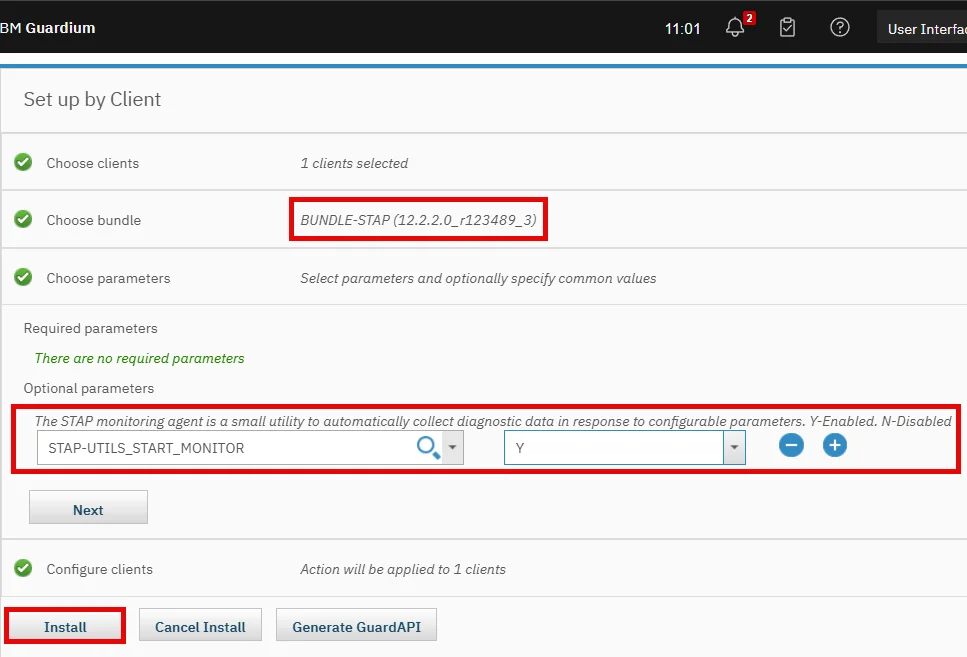
-
Check
/var/tmp/monitordirectory on raptor and notice thatguard_monitor.loghas been created there.cat /var/tmp/monitor/guard_monitor.log -
Check location of STAP logs by searching for
tap_log_dirparameter in/opt/guardium/modules/STAP/current/guard_tap.inifile on raptor.grep tap_log_dir /opt/guardium/modules/STAP/current/guard_tap.ini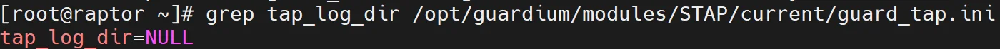
-
Notice that value is set to NULL, what means that
/tmpdirectory is used to store main log fileguard_stap.stderr.txt. Display log content.cat /tmp/guard_stap.stderr.txt -
Create new directory where logs should be stored.
mkdir -p /root/glogs -
Modify
/opt/guardium/modules/STAP/current/guard_tap.inifile and set variables.Set variables:
- tap_debug_output_level: 1
- tap_log_dir:
**/root/glogs**
-
Restart STAP.
/opt/guardium/modules/STAP/current/guard-config-update --restart stap -
Check content of
/root/glogsdirectory and notice that logs are now created there.ls /root/glogs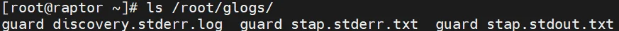
-
Check also S-TAP Events report on coll1 and notice that events are there (sort report using Timestamp column, click column name).
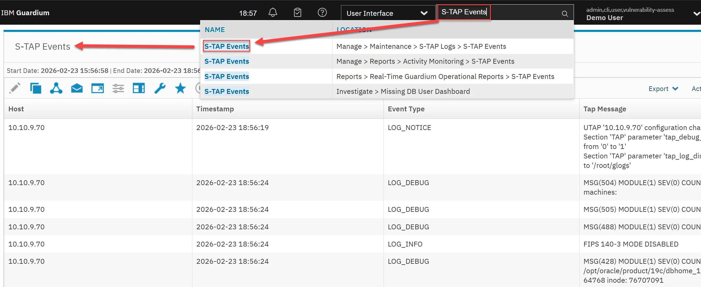
-
Change debug logging level on raptor using
guard-config-updateback to value 0./opt/guardium/modules/STAP/current/guard-config-update --modify-tap tap_debug_output_level 0 -
We can create STAP diagnostics from coll1 UI. In the S-TAP Control view press icon and select Send commands option. Then – in the pop-up - select Run diagnostics command and set Debugging Level to 4 and Apply request.
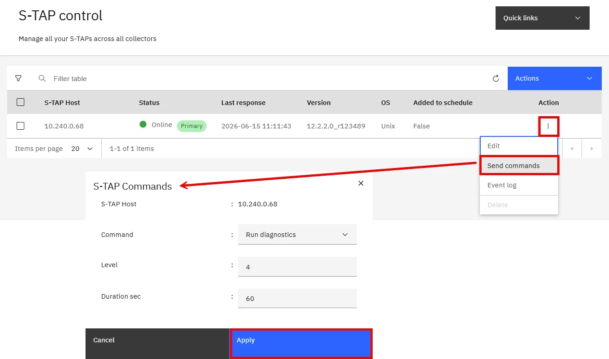
-
After 2-3 minutes go to Support information gathering view and download requested diag file.
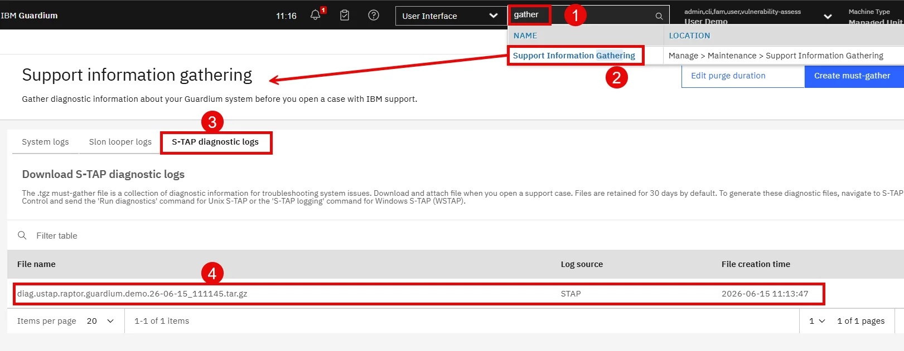
-
Try to uninstall GIM client on raptor using
uninstall.pland notice that GIM client is aware that ATAP is actived and will ignore request./opt/guardium/modules/GIM/current/uninstall.pl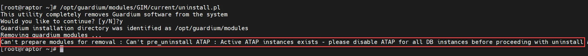
{kind=link}
{kind=link}
{kind=link}
{kind=link}
{kind=link}
{kind=link}
{kind=link}
{kind=link}
{kind=link}
Simple Inspection Engine Verification (optional)
-
From cli on coll1 set the inspection engine verification timeout to 10 seconds.
store stap network_latency 10 -
In the coll1 UI, locate and open the S-TAP Status Monitor view. This view displays the list of S-TAP agents connected to the coll1. In our case, it shows the agent installed on the raptor machine. Click the row containing the agent information.
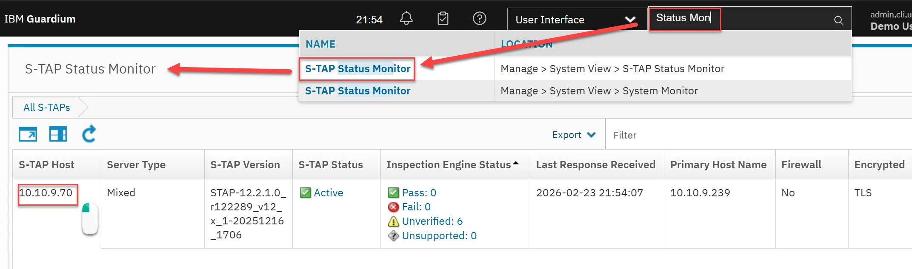
-
A list of Inspection Engines should appear. Select the one that corresponds to the pgsql on port 5432 (postgres) database. This will activate the list of available actions. Choose Verify. After a moment, you should receive a message indicating that the verification completed successfully. If the result is different, try running the verification again.
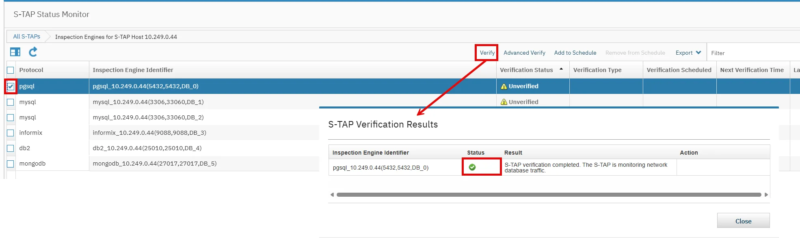
-
Let’s now stop the postgres instance on raptor.
systemctl stop postgresql -
Try running the verification again.
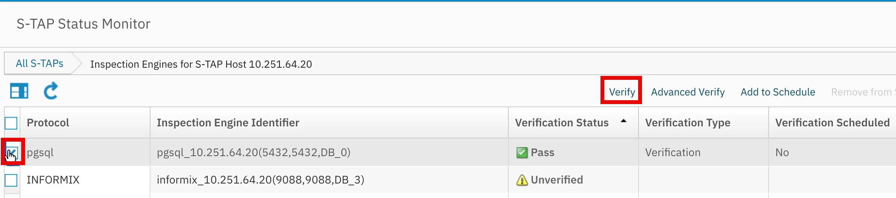
-
This time, the verification failed, and you can analyze the cause by using the Run Diagnostics option.
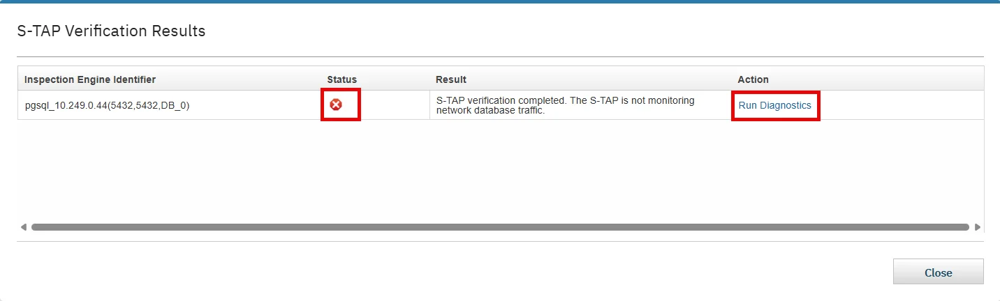
-
After a moment, information about the possible causes of the failure will be displayed. As you can see, the STAP agent is running and the coll1 can communicate with it, but the issue is related to the lack of connection to the database. This is expected, since we previously stopped the database instance.
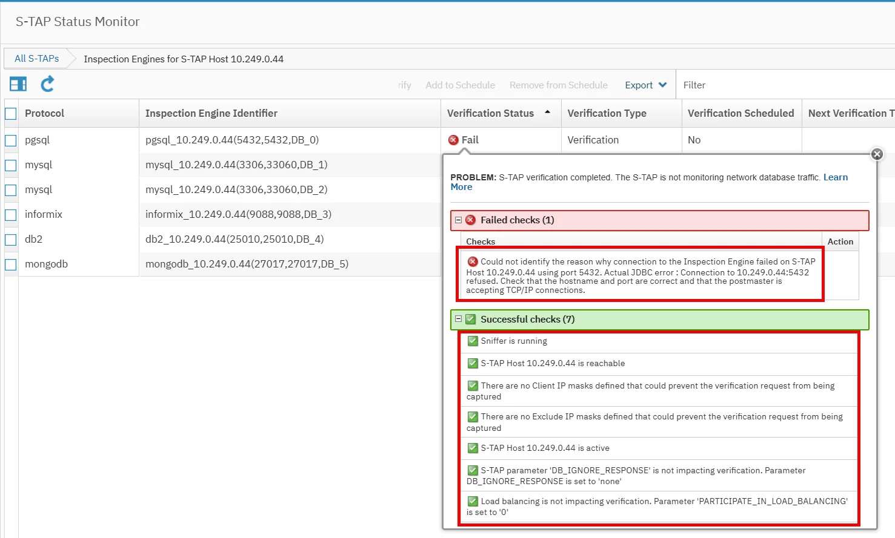
-
Start postgres again on raptor.
systemctl start postgresql -
Run verification again and confirm that it works. Sometimes manually executed process of verification can fail without visible reasons. Try running diagnostics and probably will finish successfully. It should not happen if you schedule verification process.
-
Check Failed Login Attempts view to realize that simple verification process uses the RESULTFD fake account to generate exception error.
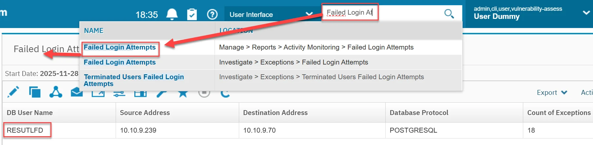
-
To configure the advances verification select pgsql instance again in S-TAP Status Monitor and press Advanced Verify. In pop-up window use plus icon to add data source definition.
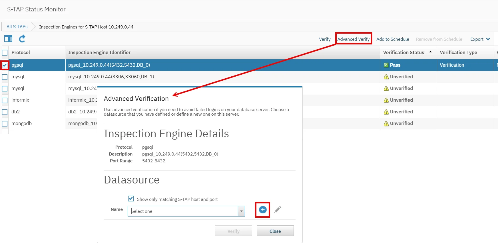
-
Configure access to postgres database.
Form values:
- Name: postgres verification (raptor)
- Database type: PostgreSQL
- User name: tom
- Password: <default password>
- Host name/IP: raptor.demo.guardium
- Port number: 5432
- Database: postgres
Then use Save, Test connection and Close buttons to store new definition and do the verification.
-
You should return to the Advanced Verification window with the name of the newly created data source already populated. Click Verify and wait for confirmation that traffic is visible on the monitored system.
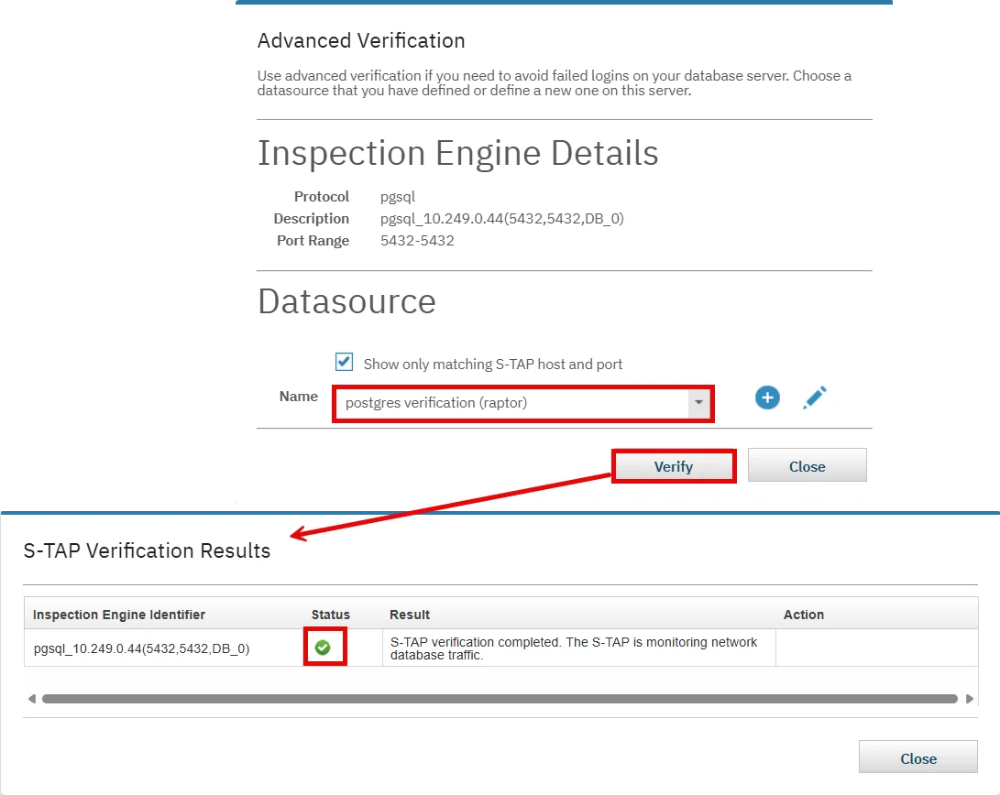
-
Finally, verify that this time the instance validation generated an SQL error by executing a query against a non-existent table. Check the Full SQL (Training) and SQL Errors reports on the dashboard.
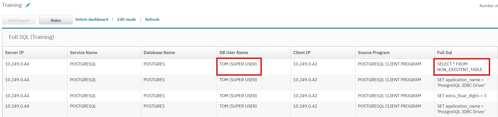
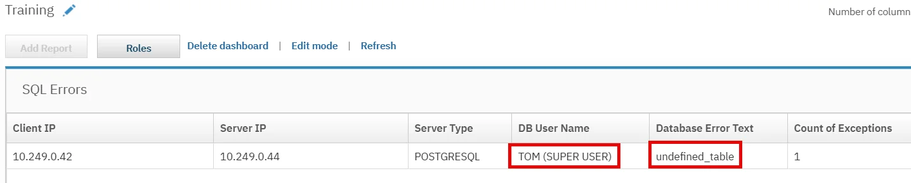
{kind=link}
{kind=link}
{kind=link}
{kind=link}
{kind=link}
{kind=link}
{kind=link}
{kind=link}
{kind=link}
{kind=link}
{kind=link}
ATAP for Mongo (optional)
-
On the raptor machine, a MongoDB database is running and listening on port 27017.
lsof -i -P -n | grep 27017 -
Let’s manage some configuration tasks from cli instead of UI. In the coll1 cli session list the inspection engines on raptor.
grdapi list_inspection_engines stapHost=raptor.demo.guardium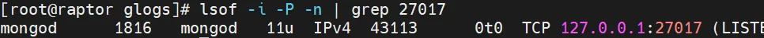
-
Notice that the current inpection engine definitions for MySQL uses the port range 3306–33060, which unintentionally includes the port designated for the mongo instance (27017). To avoid this conflict, the MySQL inspection engine definitions should be adjusted to target only the specific ports required, instead of relying on a range.
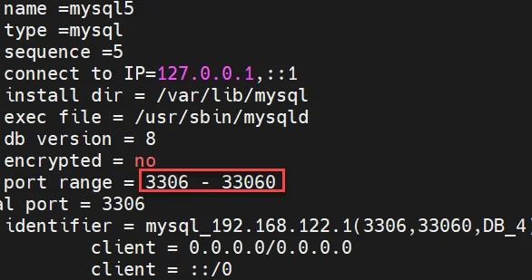
-
So, execute from coll1 cli:
1 2 3 4 5 6 7 8 9 10 11
grdapi delete_stap_inspection_engine type=mysql stapHost=raptor.demo.guardium grdapi create_stap_inspection_engine dbUser=mysqld dbVersion=8 client=0.0.0.0/0.0.0.0 ktapDbPort=3306 portMin=3306 portMax=3306 protocol=mysql procName=/usr/sbin/mysqld dbInstallDir=/var/lib/mysql unixSocketMarker=mysql.sock stapHost=raptor.demo.guardium grdapi create_stap_inspection_engine dbUser=mysqld dbVersion=8 client=0.0.0.0/0.0.0.0 ktapDbPort=33060 portMin=33060 portMax=33060 protocol=mysql procName=/usr/sbin/mysqld dbInstallDir=/var/lib/mysql unixSocketMarker=mysql.sock stapHost=raptor.demo.guardium grdapi create_stap_inspection_engine dbUser=mysqld dbVersion=8 client=0.0.0.0/0.0.0.0 ktapDbPort=3306 portMin=3306 portMax=3306 protocol=mysql procName=/usr/sbin/mysqld dbInstallDir=/var/lib/mysql unixSocketMarker=mysqlx.sock stapHost=raptor.demo.guardium grdapi create_stap_inspection_engine dbUser=mysqld dbVersion=8 client=0.0.0.0/0.0.0.0 ktapDbPort=33060 portMin=33060 portMax=33060 protocol=mysql procName=/usr/sbin/mysqld dbInstallDir=/var/lib/mysql unixSocketMarker=mysqlx.sock stapHost=raptor.demo.guardium grdapi list_inspection_engines stapHost=raptor.demo.guardium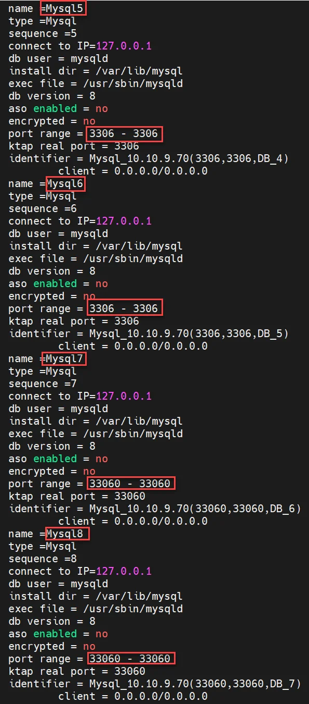
We have recreated the mysql’s inspection engines to point one port per instance. -
Generate mongo traffic on raptor and check Full SQL (Training) report on coll1. Activity should be audited correctly.
1 2 3 4 5 6 7 8 9 10 11
mongosh $MONGO_URI show dbs use sample_mflix show tables db.movies.find() exit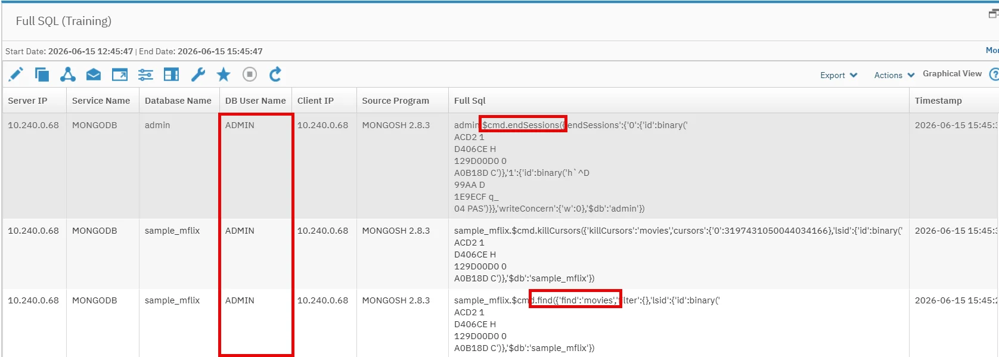
-
The MongoDB instance is configured to use encrypted connections. Connect using this method, execute a few queries, and then verify that the activity is not captured for this session.
1 2 3 4 5 6 7 8 9 10 11
mongosh --tls --tlsAllowInvalidCertificates $MONGO_URI show dbs use sample_mflix show tables db.theaters.find() exit -
Configure ATAP for mongo.
1 2 3 4 5 6 7 8 9
/opt/guardium/modules/ATAP/current/files/bin/guardctl authorize-user mongod /opt/guardium/modules/ATAP/current/files/bin/guardctl --db-type=mongodb --db-instance=mongo4 --db-user=mongod --db-home=/usr --db-base=/var/lib/mongo store-conf systemctl stop mongod /opt/guardium/modules/ATAP/current/files/bin/guardctl --db-instance=mongo4 activate systemctl start mongod -
Generate traffic again in the encrypted connection and confirm that mongo traffic is audited correctly.
1 2 3 4 5 6 7 8 9 10 11
mongosh --tls --tlsAllowInvalidCertificates $MONGO_URI show dbs use sample_mflix show tables db.theaters.find() exit -
To avoid the deleted inspection engine recreation by STAP let us disable this functionality on raptor. From cm UI in Setup by client select installed agent (12.2.2.0_r123489_3) and set these parameters:
STAP parameters:
- STAP_DISCOVERY_ENABLED: 0
- STAP_DISCOVERY_DBS: oracle:db2:informix:postgres:sybase:teradata:netezza:memsql:mariadb:verticadb:mongodb
{kind=link}
{kind=link}
{kind=link}
{kind=link}
{kind=link}
{kind=link}
Appendix
Dependencies:
It is crucial to finish all non-optional parts to be able continue.
Resources:
Instructor notes: